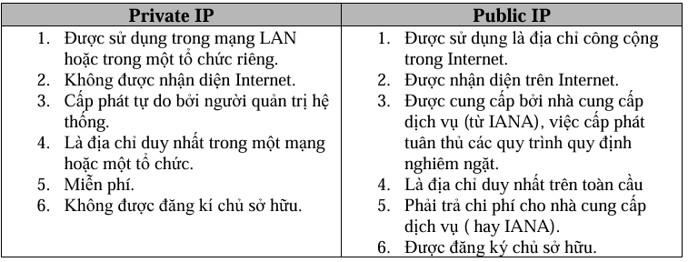

IP Private: Là địa chỉ mạng nội bộ trong một mạng LAN hoặc 1 tổ chức nào đó, không truy cập trực tiếp ra ngoài internet được, muốn truy cập ra ngoài internet thì phải sử dụng NAT để chuyển thành IP Public.
2 hệ thống mạng khác nhau thì xài trùng IP cũng không sao. Ví dụ dễ hiểu địa chỉ nhà bạn có địa chỉ là 1 đường A thì ở đường B vẫn xài địa chỉ là 1 vẫn đc, miễn là khác khu vực thì vẫn xài trùng số đc. Đây là lý do chia ra thành IP Private và IP Public.
➜ Nói tóm lại IP Private là IP cá nhân chỉ sử dụng trong mạng LAN
IP Public: Là địa chỉ truy cập được internet do nhà cung cấp mạng cung cấp (ISP), mỗi địa chỉ công cộng chỉ có một và không trùng với bất kì địa chỉ nào khác.
IP Public thì được nhận diện bởi internet và phải đăng ký chủ sở hữu nghĩa là không được trùng. Ví dụ mỗi người sẽ có một số căn cước duy nhất để nhận diện người đó, nếu số đó đã có người xài thì không được xài trùng lại.
➜ Nói tóm lại IP Public là IP được cấp bởi 1 tổ chức và dùng để sử dụng ra ngoài mạng Internet và không được trùng.

? Tại sao lại phải chia ra thành IP Private và IP Public mà không gộp chung lại
Câu trả lời rất đơn giản vì nếu xài IPV4 ( phổ biến hiện nay ) thì chúng ta sẽ chỉ có khoảng xấp xỉ 4.3 tỷ IP , nghe thì tưởng rất nhiều nhưng thật ra rất ít và thậm chí là không đủ , ví dụ đơn giản nếu mỗi người có 2 thiết bị là laptop và PC vậy suy ra mỗi người cần 2 IP vậy chỉ có khoảng 2 tỷ người có IP xài trong khi đó dân số hiện nay đã 8 tỷ người, nên việc phải chia ra IP private và IP Public để có thể đủ IP dùng, IP Private thì có thể xài trùng miễn là 2 mạng khác nhau, IP Public thì đc quy định sẵn rồi nên xài cũng bình thường.
➜ Tóm lại chia IP thành 2 mảng để tránh việc thiếu hụt IP